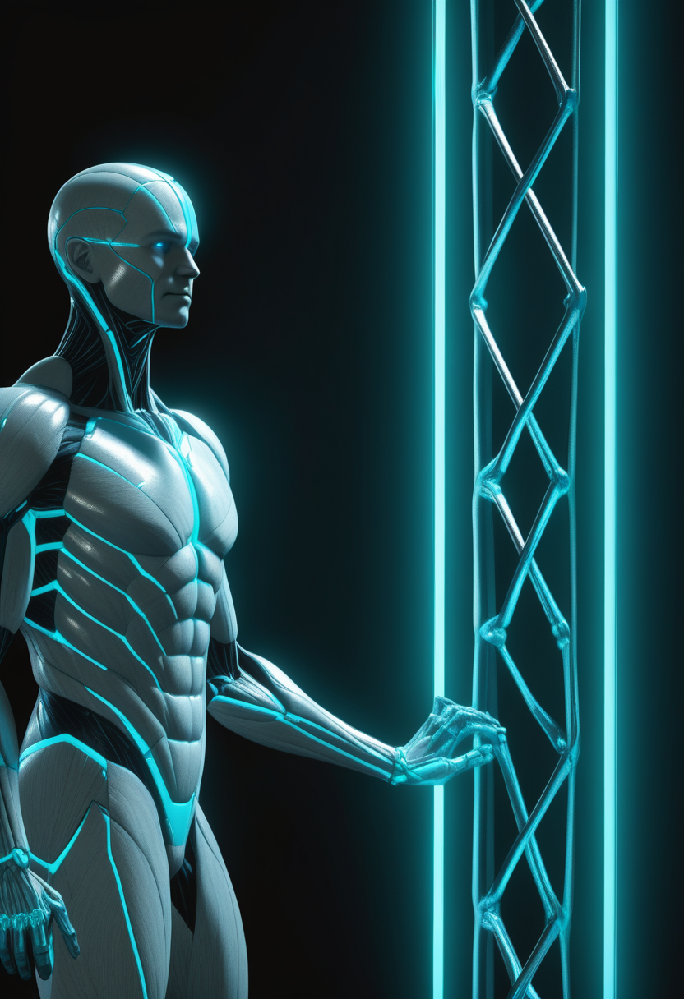
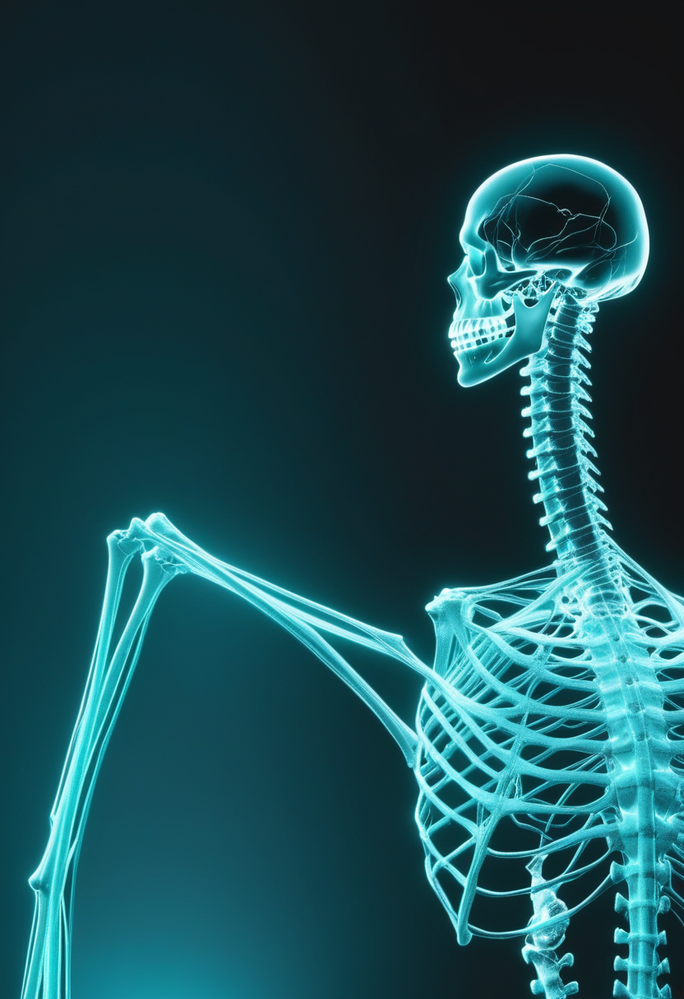
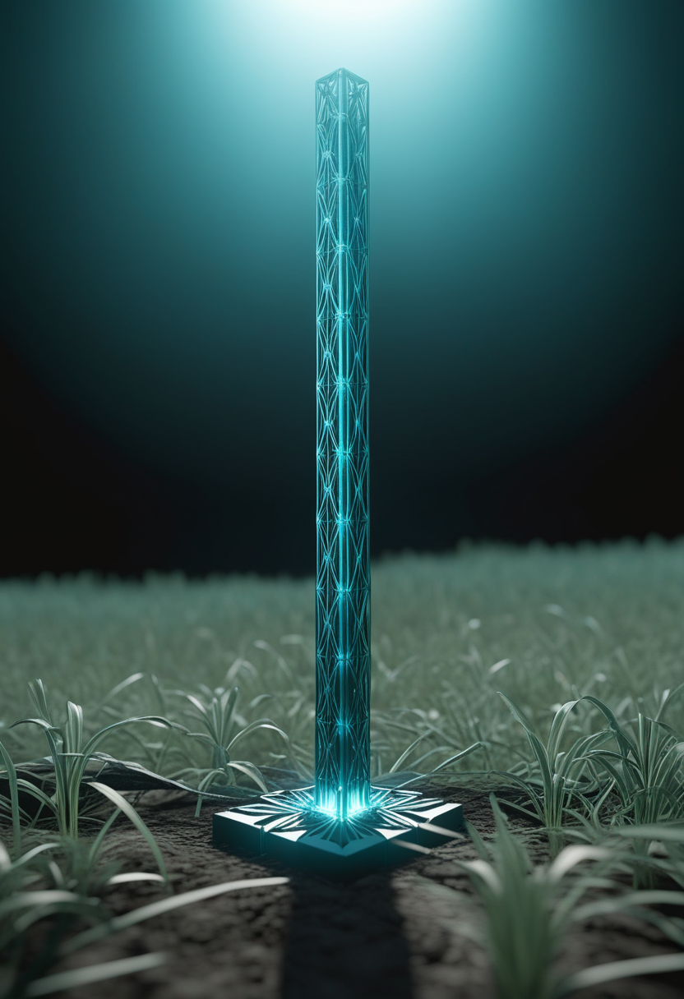
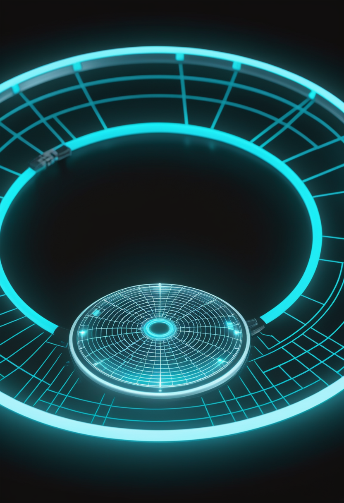
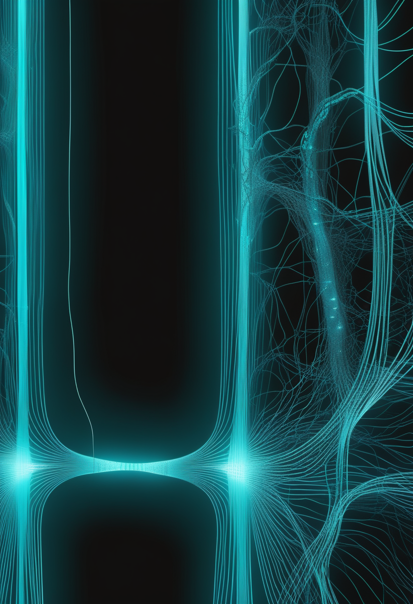
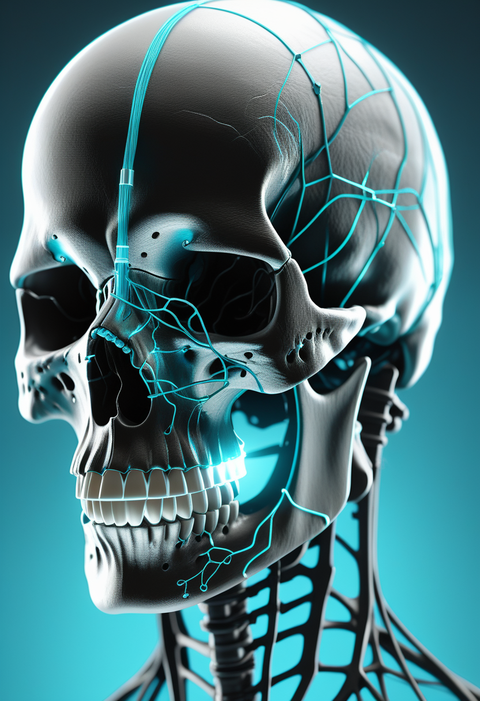
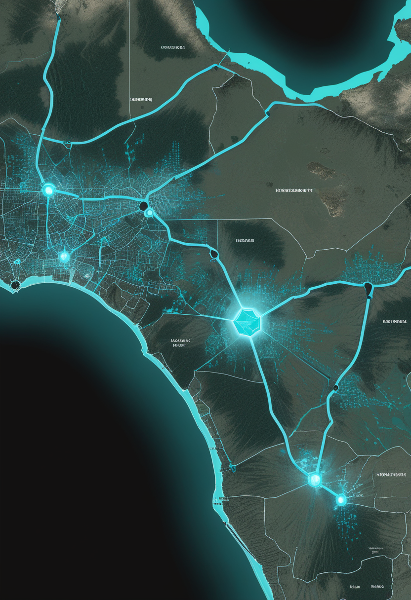
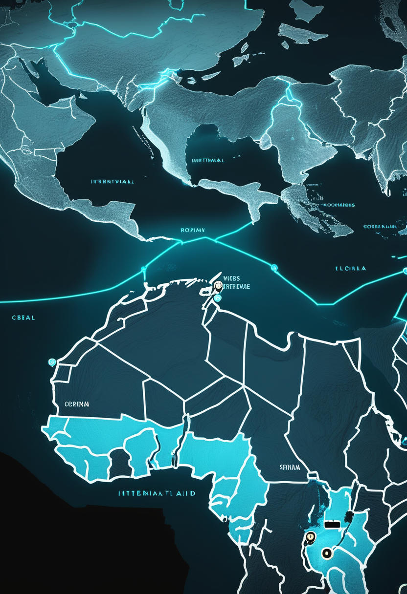
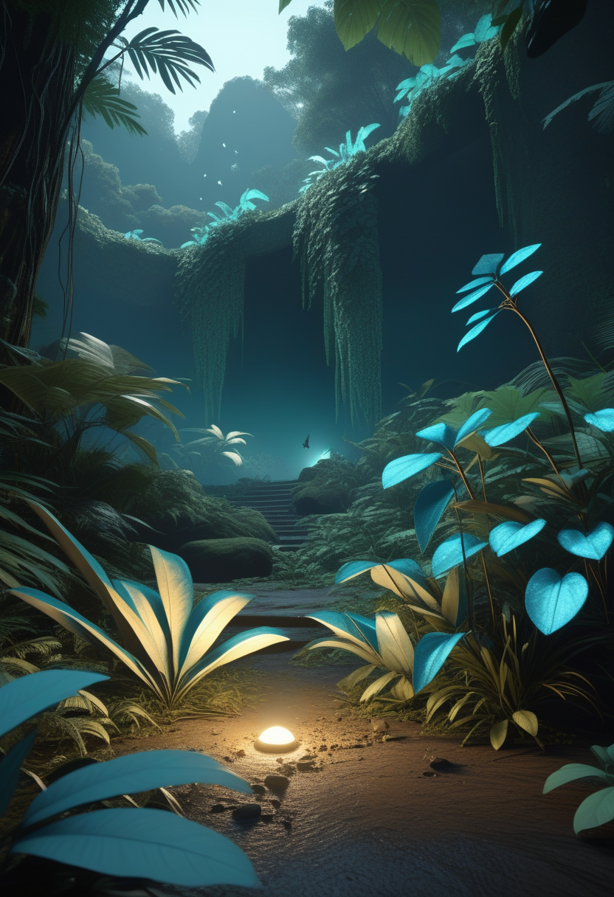
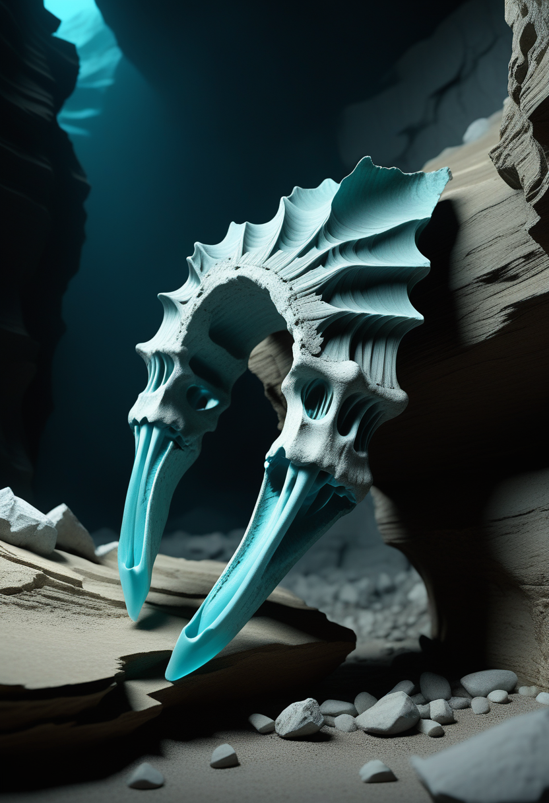

脊髄損傷で動かなくなった手が、硬膜の上に貼り付けた小さな半導体でふたたびものを握りはじめた。中国が世界に先駆けて商用承認した侵襲型BCIは、Neuralinkとも異なる低侵襲の設計で「動かす自由」を静かに再定義する。その傍らで、150,000年前の西アフリカの密林が「サバンナのみ」という常識を覆し、8月30日の打ち上げへ荷造りが進む望遠鏡がハッブルの100倍の目で宇宙を見渡す準備を整えている。守ることと、越えることが、今日も静かに同時に進む。
中国国家薬品監督管理局(NMPA)は2026年3月、上海のNeuracle Technology(神取科技)と清華大学が共同開発した脳-コンピューターインターフェース「NEO」を世界で初めて商用目的で承認した。コイン大のデバイスに搭載された8個のセンサーが脳を包む保護膜(硬膜)の外側に乗る ― Neuralinkが皮質を直接貫通するのとは根本的に異なる低侵襲設計だ。対象は頸椎損傷(C4〜C7)による部分麻痺の患者(18〜60歳)で、脳の運動意図をデコードして物理的な動きへ変換する。2023年10月以来36例の臨床試験を経て物をつかむ動作の回復が確認され、2025年に32例を集中実施した試験でもデータは良好。「Neuralinkより先に商用承認 ― 世界初は中国のスタートアップだった」とMIT Technology Reviewは6月1日に報じ、BCI規制競争の新しい地図が描かれた。

ロシュ(Genentech)は2026年3月23日、抗ミオスタチン抗体GYM329(エムグロバルト/RO7204239)のSMAおよびFSHD向け開発を中止すると発表した。Phase 2/3 MANATEEは、リスジプラム(エブリスジ)との組み合わせで歩行可能な小児SMA患者を対象に実施されたが、試験薬は安全で忍容性は高かったものの、リスジプラム単独と比べて「有意義な臨床的有益性」を示せなかった。「筋肉の成長を直接ねらうアプローチ」がSMAで有効でないと示した初の大規模証拠となった。ロシュは同分子を肥満・2型糖尿病へ転用して開発を継続する。SMA領域では同じ筋標的クラスのアピテグロマブ(Scholar Rock)がFDA審査中で、ロシュ撤退によりその帰趨に注目が集まる。

NMD Pharmaの経口薬NMD670(イグナセクラント)を評価するPhase 2試験SYNAPSE-SMAが、最終参加者の評価を完了した。1日2回服用・21日間のランダム化二重盲検クロスオーバー試験で、米国・欧州の複数施設でSMA3型の成人52名が参加。NMD670は骨格筋の持続的収縮を補助する仕組みをもち、既存の遺伝子・RNA療法とは作用点が異なる。データの詳細解析を経て、結果は2026年夏から秋にかけて公表予定。承認済みの3薬剤(スピンラザ/ゾルゲンスマ/エブリスジ)が届きにくい成人SMA3型の症状改善に新しい選択肢を加えられるかが問われる。

Scholar RockのアピテグロマブはFDAのBLA審査が進み、審査期限(PDUFA)の9月30日まで百日を切った。Phase 2/3 SAPPHIRE試験では既存のSMN補充療法への上乗せで有意な運動機能改善を示した。2026年3月のロシュ・エムグロバルト中止により、「筋肉を直接ねらう」アプローチではアピテグロマブが唯一の残存候補となった。欧州でも審査が進んでおり、承認されれば「SMN補充(スピンラザ/エブリスジ)＋筋標的(アピテグロマブ)」という二層の組み合わせ治療が初めて現実になる。製造上の問題は解決済みで、有効性・安全性への懸念はないとされる。
エムグロバルト失敗が示した壁 ― それでもアピテグロマブが独走し、NMD670が夏の結果を待つ。「筋肉を取り戻す」への挑戦は続いている。

NEOの設計の核心はNeuralinkとの違いにある。Neuralinkの N1 チップは皮質(大脳外層)を直接貫通するが、NEOの8センサーは硬膜(脳の保護膜)の外側に接するだけで脳組織を傷付けない。これにより出血・神経瘢痕・長期信号劣化のリスクが低く、中国規制当局は加速審査経路を適用した。2026年3月の承認後、Neuracle社は適応拡張(下肢・視覚補綴)と解像度向上を計画している。MIT Technology Reviewは「商用BCIの世界初承認はNeuralink ではなく中国のスタートアップだった」と評価し、BCI規制競争が米中二極体制に入ったことを示す画期的な出来事だと指摘した。

イェール大学の研究チームは2026年6月9日、リアルタイムfMRI技術を用いた新しいBCIのアプローチをNature Neuroscienceに発表した。従来のfMRI-BCIは習得に最長10セッションを要し、約3分の1のユーザーは何時間練習しても制御を習得できなかった。今回は「脳の自然な活動経路に沿って」BCIを設計し直すことで、参加者が素早く制御を習得し、脳活動自体がその習得を支えるように再編成されることを確認した。ビデオゲームを脳だけで操作するタスクで有効性を示し、習得できないユーザーの比率を大幅に削減。訓練コストの低減はBCIの普及を左右する根本的な課題であり、設計哲学の転換点となる研究だ。

Synchronの血管内留置型BCI「Stentrode」は、開頭なしで静脈経由に設置できる16電極デバイス。2026年下半期に米国複数施設でのピボタル(主効果確認)試験を開始し、完了後に初の埋め込み型BCIとしてFDAの審査前承認(PMA)を申請する予定。SynchronのBrainOSはALS・脊髄損傷・脳卒中後患者へのコミュニケーション・コントロール支援を目的とする。中国NEO商用承認、Neuralinkの量産体制拡充と並び、2026年はBCI規制の歴史的な転換年となりつつある。
2026年はBCI元年 ― 世界初商用承認(中国)、自然経路設計(Yale)、PMA申請秒読み(Synchron)が同時に動いている。

6月11日時点でコンゴ民主共和国(DRC)は確認635例・死亡127例・入院中260名を報告した(前号比+37例)。最多はイトゥリ州で18保健ゾーンに600例。一方ウガンダではカンパラで8例、隣接するワキソ県で1例を確認。首都カンパラへの到達はブンディブギョ型エボラで初の都市圏感染を意味する。WHOは「カンパラでの継続的な地域内感染は確認されていない」としつつも警戒を維持。ワクチンも特効薬もない同株に対し、感染者の隔離・接触追跡・支持療法が唯一の防衛線となっている。

米国務省は追加3,800万ドルの緊急資金を発表し、DRC・ウガンダへの対エボラ直接支援の累計を2億ドル超とした。別途、米国は二国間支援として1億1,200万ドルを投入しPPE供給・スクリーニング・接触追跡・診断キットを支援。EUも1,500万ユーロを拠出した。MSF(国境なき医師団)は現地治療センターを拡充して患者受け入れ体制を強化中。WHOはPHEIC(国際的公衆衛生上の緊急事態)の枠組みで渡航制限の回避と貿易継続を加盟国に勧告している。
米CDCと国土安全保障省(DHS)は5月18日、DRC・ウガンダからの渡航者に対する検査・入国制限・公衆衛生措置を強化した。エボラの潜伏期間(最大21日)を考慮した症状モニタリング体制を整備し、症状のある渡航者を即時隔離できる体制を構築。CDCのMMWR(5月22日号)はブンディブギョ株の感染モデル予測を掲載し、現在の封じ込め措置が維持されれば8月をピークに感染増加が鈍化するシナリオを示した。欧州疾病予防管理センター(ECDC)も継続監視を行いリスク評価を随時更新している。
首都カンパラへの到達は都市感染リスクの新局面 ― 国際資金と水際対策がつなぎとめる最前線。8月の転換点まで封じ込めを維持できるか。
NASAのナンシー・グレイス・ローマン宇宙望遠鏡が8月30日の打ち上げに向けて最終梱包を完了し、間もなくゴダード宇宙飛行センターからフロリダ・ケネディ宇宙センターへ輸送される。当初予定より8カ月前倒しで、SpaceXファルコン・ヘビーで太陽地球系ラグランジュ点L2へ投入される。主鏡2.4m・視野はハッブルの100倍以上。赤外線で10億個の銀河を測定しながら暗黒エネルギー・暗黒物質・系外惑星を同時探索する5年間の一次ミッションだ。JWSTが「精密な狙い撃ち」なら、ローマンは「超広域サーベイ」 ― 二つの目が2026年以降、宇宙の地図を同時に塗り替える。
ジェームズ・ウェッブ宇宙望遠鏡(JWST)は6月11日、系外惑星 WASP-121b の昼夜境界(ターミネーター)に劇的な非対称があることをNature Astronomyに報告した。昼側の平均気温は約2,770K(約2,500℃)、夜側は約1,000K(約725℃)で、「夕方側のターミネーター」が「朝方側」より多くの光を吸収する。NIRSpecによって水分子が高温で分解される過程と一酸化炭素シグナルが詳細に捉えられ、昼側から夜側へ向かう強烈な東向きの風も確認された。系外惑星の大気が地球の気候のように「循環」する様子の直接観測は、地球外大気科学の新しい章を開く。
ミズーリ大学の研究チームは、JWSTのアーカイブデータから「以前は見られなかった特徴の組み合わせ」を持つ銀河群を発見し、その奇妙さをカモノハシ(プラティパス)に例えた。一般的に明るく活動的なスターバースト銀河は若く星形成が活発だが、これらの銀河は高い星形成率を持ちながら同時に老成した特徴も示す ― 既存の銀河進化モデルが予測しなかった天体だ。初期宇宙の銀河が多様な進化経路をたどることを示し、標準的な銀河形成シナリオへの見直しを迫る。JWSTは稼働3年で「例外的な天体」を「新カテゴリ」に変え続けている。
ローマン(広域)とJWST(精密)が同時に宇宙を問い直す2026年 ― WASP-121bの「朝夕」が、「プラティパス」が、宇宙の常識を少しずつ書き換えていく。

2026年5月のScienceDailyと国際報道によると、コートジボワール(象牙海岸)のベテ1(Bété I)遺跡の分析で、ホモ・サピエンスが約150,000年前に密な西アフリカ熱帯雨林に居住していたことが確認された。これまでの証拠の2倍以上前に遡り、「人類は開けたサバンナや海岸線を好み、密林を避けていた」という数十年来の通説を根本から覆す。花粉分析では草本花粉がほぼ皆無で湿潤な樹木・ヤシの花粉が多数検出され、「森の縁」でなく密な内部に居住した可能性が高い。遺跡は2020〜2021年の採石で失われており、採取済み試料の分析が150,000年の扉を開いた。

2026年1月に国際チームが発表したモロッコ・カサブランカ近郊「トーマス採石場」の研究では、推定773,000年前の3体分の下顎骨・椎骨・歯の化石を記録したと報告した。研究者らは「現代人とネアンデルタール人の最後の共通祖先の可能性がある」と結論し、人類の起源を「南アフリカ・エチオピア」から「北西アフリカを含む汎アフリカ」へ地理的に再配置する証拠だと述べた。ベテ1(西アフリカ)の熱帯雨林居住証拠と合わせ、「アフリカの多様な生態環境で人類が育った」という像が具体性を増している。
2026年前半の発見が積み重なり、「人類の起源は東アフリカの単一地点」という図式が解体されつつある。北西アフリカ(モロッコ)の773,000年前の骨格、西アフリカ(コートジボワール)の150,000年前の熱帯雨林居住、南アフリカ・エチオピアの既存遺跡 ― それぞれが独立した系統を示し、「アフリカから出た一本の木」ではなく「アフリカ全体を覆う茂み(bushy model)」として人類進化を捉える汎アフリカ起源論が証拠の積み重なりとともに主流へ近づいている。各大陸で異なる生態環境が人類の適応力を育てたとすれば、熱帯雨林も砂漠も、すべてがわたしたちの故郷だったことになる。
東アフリカ一点起源から汎アフリカ起源へ ― 2026年の古人類学は「人類はより広く、より多様な環境で生まれた」という像を描き直している。
今日の世界は、脳で自由を開くことと、150,000年の昔に密林を歩いた足跡と、8月30日に空へ向かう望遠鏡を、同じ金曜日に並べていた。商用脳インプラントは規制競争の新しい地図を刻み、エボラは首都の空気まで変え、ローマン望遠鏡はハッブルの百倍の目を携えて宇宙を見渡す準備をしている。何が始まりで何が続きかは、まだ誰にも分からない。ただ今日も、世界は止まらず問いながら前へ進んでいる。
明日への短い便り。今日も世界は、問いながら回っていました。おやすみなさい。